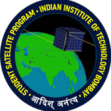

Satellite
Advitiy Nano-Satellite
Student Satellite Team, Attitude Determination and Control · IIT Bombay · 2018-2019
Built a modular simulation framework for satellite dynamics and environment for controller testing, validated a PID controller via on-board-in-loop simulation on Arduino, and modeled orbital solar power for the CubeSat electrical budget.